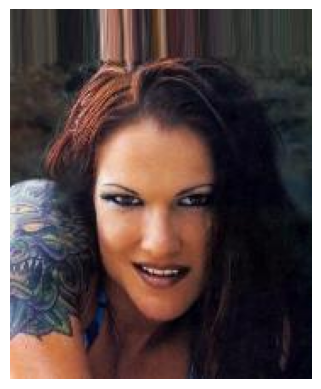
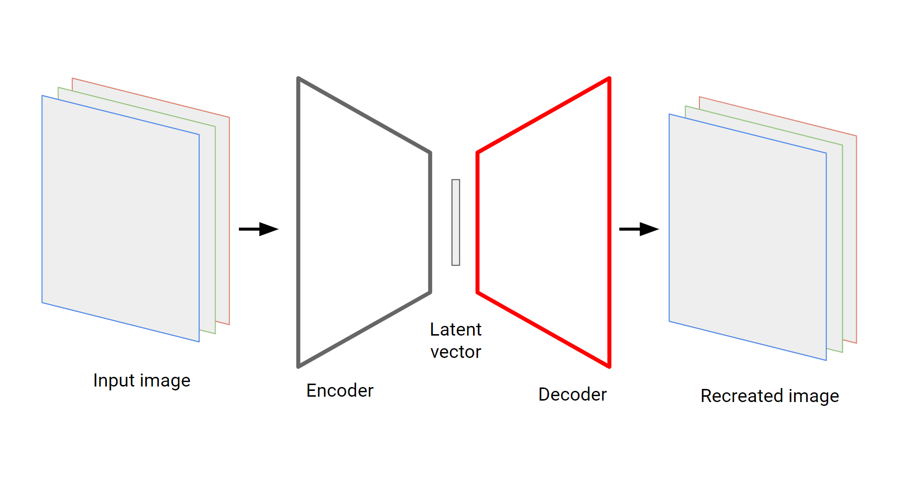

1. VAEs: Variational autoencoders
Starting simple: Autoencoders
If you’re familiar with building and training neural networks autoencoders are a good place to start since they’ll demonstrate why the idea of being able to sample from a distribution is important. The way they work is also pretty intuitive. As we progress it will become clear why they’re not suitable for generative modelling and the changes we need to make to bridge the gap. Autoencoders learn low dimensional representations by passing data through an information bottleneck and try to reconstruct it at the other end.
Defining a dataset
For this example we’ll try and generate some faces from the famous CelebA dataset. The dataset contains more than 200 thousand images of celebrities. The images have also been cropped so that faces are centred, which makes the machine learning task a bit easier.



The dataset also comes with a set of attributes labels for each image for things like “Blond Hair” and “Eyeglasses”. These will be useful when we want to explore the encoded representations of the images that we generate.
What is an autoencoder?
You can break down an autoencoder network into two parts, the encoder and decoder. It works by passing data through the encoder, which takes the input and squeezes it down to vector that is smaller in size. This is the low dimensional bottleneck. This vector is then input to the decoder which tries to reconstruct the input image. The model is trained by minimizing the difference (more on this later) between the input image and reconstructed image. In order for this to work The output of the encoder needs to contain enough information about the input data so that the decoder network can recreate it.

The encoder output can be considered a low(er) dimensional vector representation of the input data. They’re often called latent or hidden vectors since they’re supposed to contain the latent attributes of the data. For our purposes though the most interesting part is the decoder. If you train an autoencoder on a collection of images then you should be able to generate new images by passing simple, low dimensional data into the decoder input!
Model structure and training
We can build the encoder and decoder layers using a series of convolutional (and transpose convolutional) layers. This is a common strategy for image based ML problems and, since there are other excellent resources describing how convolutional layers work, including the link to pytorch docs, I won’t discuss them here. All the code written for this example can be found here. In building the model for this example I took plenty of inspiration from Ref to deep learning book and the repo.
The nice thing is that we can abstract away most of the complexity when it comes to training. The model, with an input sample \(x\) can be represented simply as \[ \hat{x} = g(f(x)) \] where \(\hat{x}\) is the reconstructed sample and \(g\) and \(f\) are the decoder and encoder respectively. The latent vector \(h\) is given by \[ h = f(x). \] Finally, training the autoencoder means simply picking a loss function \(L\) and minimising \[ L(x, g(f(x))). \] All we need to do now is select a loss function. In this case \(x\) is a tensor of RGB pixel intensities for each image. The values are scaled to be between 0 and 1. Using the mean squared error (MSE) between our reconstructed and original pixel values is a reasonable choice, forcing the model to try and get the correct pixel values.
Using MSE loss in image reconstruction tasks can make the model less sensitive to small amounts of gaussian blur around the target pixel values, which makes images look blurry.
Keeping things simple and training the model using the Adam optimiser for 10 epochs achieves reasonable results. Practically no time was spent fine tuning this model but it does pretty well. Training took about 30 minutes on a single GPU. Instead of plotting training loss curves it’s more insightful to just plot the input and output images directly.
Comparing inputs and outputs
A side by side comparison of input and output images of the autoencoder should give some sense of how well it’s performing.


A side by side comparison shows that while a lot of detail is lost the reconstructed images do resemble the originals. At the very least they look like human faces! What’s interesting is that it’s not just blurry, some of the fine details are lost. Subtle things like where the eyes are pointing and the asymmetry of a smile. Some things like jewellery and ties are lost completely. This happens because that information doesn’t make it though the bottleneck, probably since it’s less important than other facial characteristics when it comes to reconstructing pixel values. When information is missing the decoder just substitues it with something that “sort of works” for most training examples, or misses it entirely. Its definitely possible to do better at this stage but the decoder does seem to be able to generate faces.
If there is interest I can make the pre-trained decoder available so that you can try an generate images with it yourself.
Generating (new) images
This is where things get tricky. It should be possible to generate new faces by creating new latent vectors and passing them through the decoder. What isn’t clear however is how to generate the latent vectors. The problem of generating faces has now turned into the problem of generating latent vectors. This is the issue that VAEs address and is a good way to understand the underlying assumptions.
Before we explore that however, we can see what happens if we try and make faces by taking an educated guess at what reasonable latent vectors look like. Remember, the goal is generate faces that are realistic and human looking, but distinct from those that are in the dataset. We can try and be clever and encode a set of images from the test set, take the mean and standard deviation values of the latent vectors generated and, in a bit of a hand-wavey attempt to generate vectors from the same distribution as the encoded sample, generate new vectors by sampling from a normal distribution with the same parameters.


Turns out this doesn’t work so well. If you squint at some of these image you can just about see a tortured face peering out from under the random blobs of colour, but nothing like the image that were generated above. This is the problem with using models like autoencoders to generate new data. There are no constraints on what values the latent vectors take, so when it comes to trying to generate new images you’re stuck.
Going a step further and generating vectors by using the mean and standard deviation of each dimension independetly generates slightly more realistic looking images, but similar problems are observed.
VAEs to the rescue
VAEs address the problem of sampling the latent vectors directly by constraining them to be drawn from a known distribution. This is the equivalent of putting a prior on the \(z\) vectors in a Bayesian framework. Typically we choose this distribution to be a isotropic multidimensional Gaussian, assuming no correlation between any of the dimensions of the latent vector: \[ P(z) \sim \mathcal{N}(0, I). \] The choice of distribution is just an assumptions but has some useful properties that we’ll see later. This change in modelling assumptions has a significant impact on how VAEs are trained and it becomes clear that they’re actually only superficially similar to autoencoders.
A natural question to ask is whether the choice of prior distribution constrains the model outputs in anyway. The good news is that it doesn’t, any \(n\) dimensional distribution can be generated by sampling \(d\) variables from a normal distribution and transforming them with a sufficiently complex function. This is how inverse-transform sampling works, as discussed on this page.
Thinking in terms of distributions
Instead of optimising encoder and decoder functions consider a VAE as a latent variable model where were are modelling the join probability \(P(x, z)\). Using the chain rule of probability we can write this out in a way that better defines the generative process: \[ P(x, z) = P(x | z)P(z) \] where the process is
- Sample a latent vector \(z \sim p(z)\)
- Generate a data point \(x \sim P(x | z)\).
What we want to optimise (maximise in this case) is the probability of each training example \(x\) under the generative process \[ P(x) = \int P(x | z)p(z) dz. \] In principle we can do this directly by sampling \(n\) values of \(z\) and then computing \(P(x) \approx \frac{1}{n} \sum_i P(x | z_i)\). The problem here is just how many samples it would take. If you consider all the possible configurations of the pixels in the images \(x\) its obvious that for the vast majority of the time \(P(x|z)\) will be almost zero and sampling the corresponding \(z\) values will not help improve our estimates of \(P(x|z)\). The discussion in this excellent introduction goes into more detail. What makes VAEs more efficient is that during training we try and sample values of \(z\) that are likely to produce \(x\).
% mention this after adding something about p(z|x) It might be a good time to pause here before we discuss how we can optimise this and think about why this formulation helps us generate new data. During training
Not only will be now be able to sample latent vectors from
The reparametrisation trick
Intuitively
I remember asking a researcher at my old job exactly why VAEs made the assumption that elements in the latent space were normally distributed and the response was “that’s just the assumption of the model. At the time it did not help.